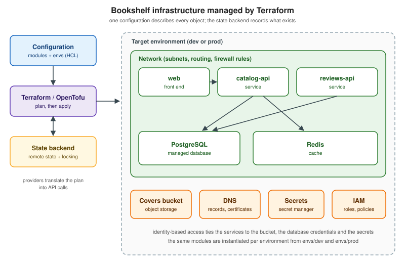

Terraform
|
This content was generated with the assistance of AI and should be verified against the official documentation before being relied on in production. |
Welcome to the Terraform reference. Terraform is a tool for describing infrastructure — networks, databases, containers, buckets, DNS records, identities and permissions — as declarative text files, and for making a real environment match that description. You write the desired end state in HashiCorp Configuration Language (HCL); Terraform compares it with a record of what it created before (the state) and with what actually exists, shows a plan of the differences, and applies only the changes you approve. The same files can be reviewed in a pull request, versioned in Git and run again to rebuild an environment from scratch. OpenTofu is the open-source fork of Terraform that is maintained under the Linux Foundation; it reads the same language and uses the same providers, and this section treats the two tools as peers and marks every place where they differ.
This section is for backend developers and platform engineers who build and ship services, such as those in the Docker and Kubernetes references, and now need to create the infrastructure underneath them in a repeatable way. It starts from the problem that manual provisioning creates, builds up the language and the workflow, and ends with a complete repository that provisions the whole example application. It explains the concepts, the commands and the configuration, and it links every example to the official documentation that backs it. The core pages need no cloud account: they run on a laptop against the Docker provider, the utility providers and LocalStack.
Version baseline and release cadence
The examples are written and checked against Terraform 1.17 (1.17.0 was released on 2026-10-21), OpenTofu 1.13 (the
latest patch at the time of writing is 1.13.2, published on 2026-10-21), the hashicorp/aws provider 6.x, the
hashicorp/azurerm provider 5.x, the hashicorp/google provider 8.x and the hashicorp/setup-terraform GitHub
Action v4. Both projects publish a new minor version several times a year and keep publishing patch releases for
earlier minor lines after a new minor appears: when 1.17.0 shipped, the 1.16 line was still receiving fixes with
1.16.7, and OpenTofu published the 1.12.9 and 1.13.2 patches on the same day. Provider releases follow their own
schedule, independent of the core, and a provider major version can change resource arguments in breaking ways, so
required_providers constraints and the dependency lock file matter in practice. The changelogs and upgrade
guides are the authority for what changed in a given release; What Changed and Migration
collects the changes since the 2024 and 2025 era of the books listed in the bibliography, and
OpenTofu maps OpenTofu versions to Terraform versions. Always read the
upgrade guides and the
Terraform changelog before moving to a new minor
version.
What’s covered
The pages are grouped by topic. Each entry gives the page title and a summary of what it covers.
Foundations
-
Introduction and Infrastructure as Code — Why infrastructure as code exists and how Terraform works — the problems of manual console and CLI provisioning, declarative versus imperative tools and idempotence, the architecture of Terraform core, providers (over the gRPC plugin protocol), state and the registry, the write, plan and apply workflow, use cases, a comparison with CloudFormation, Bicep, Pulumi, Crossplane and Ansible, the licensing history from MPL to the Business Source License, the OpenTofu fork and the IBM acquisition, the editions (CLI, HCP Terraform and Terraform Enterprise), and when Terraform is not the right tool.
-
Getting Started with Terraform — Installing Terraform (Homebrew tap, apt and dnf repositories, Windows, the hashicorp/terraform Docker image), version managers (tenv, tfenv, tfswitch and .terraform-version), editor support, shell completion and the Docker get-started tutorial applied to the Bookshelf project — init, fmt, validate, plan, apply, show, output and destroy — with the plan output symbols, the .terraform directory, the dependency lock file and a recommended .gitignore.
-
HCL Syntax and Configuration Files — The Terraform configuration syntax — blocks, labels, arguments, nested blocks, identifiers and comments — the JSON variant (.tf.json), every file type Terraform and OpenTofu read (.tf, .tfvars, override files, .tftest.hcl, .tfquery.hcl, Stacks files, .tofu, the lock file) and how they are loaded, the terraform settings block, the full list of top-level block types, the official style guide and terraform fmt.
Configuration language
-
Providers — Terraform and OpenTofu providers in depth — source addresses and required_providers, local names, version constraints, the dependency lock file (zh and h1 hashes, init -upgrade, providers lock for several platforms), provider configuration and authentication, aliases for multi-region and multi-account setups, passing providers to modules with the providers meta-argument and configuration_aliases, provider tiers, the plugin cache, providers mirror, filesystem and network mirrors in the CLI configuration, provider-defined functions, variables and locals in provider requirements (Terraform 1.17) and OpenTofu provider for_each.
-
Resources and Data Sources — The Terraform resource block and the objects it manages — arguments versus attributes, computed and known-after-apply values, how create, update, replace and destroy are decided, operation timeouts — data sources and when they are read, the built-in terraform_data resource with its store block (1.16), the utility providers random, time, tls and null, and the differences with OpenTofu.
-
"Variables, Outputs and Locals" — Terraform and OpenTofu input variables (type, default, description, validation including cross-variable rules, sensitive, nullable, ephemeral, deprecated, const), the order in which variable values are resolved (defaults, environment variables, terraform.tfvars, auto.tfvars, -var-file, -var), output values (sensitive, ephemeral, deprecated, depends_on, precondition), module outputs, local values, recent changes and Terraform versus OpenTofu differences.
-
Types and Expressions — The Terraform and OpenTofu expression language — value types and type constraints (optional() attributes with defaults, any, conversion and the convert function), references and named values, operators and precedence, conditional expressions, strings, templates, heredocs and template directives, for expressions, splat expressions, dynamic blocks and when not to use them, and version constraints — with Bookshelf examples, recent changes and the Terraform versus OpenTofu differences.
-
Functions — The Terraform and OpenTofu built-in function library by category (numeric, string, collection, encoding, filesystem including templatefile and templatestring, date and time with timestamp versus plantimestamp, hash and crypto, IP network with cidrsubnet and cidrsubnets, type conversion with try, can and convert), regular expression functions, sensitive, nonsensitive, issensitive and ephemeralasnull, the built-in terraform provider functions and the terraform.applying symbol, pure versus impure functions, terraform console, recent changes and Terraform versus OpenTofu differences.
-
"Meta-Arguments: count, for_each and depends_on" — Terraform and OpenTofu meta-arguments in depth — count and for_each to create several instances of a resource or module, the count and each objects, resource instance addresses in the plan and in state, why for_each is safer than count when elements are removed, the "known only after apply" errors and their workarounds, depends_on and hidden dependencies for resources, modules and data sources, the provider and providers meta-arguments, meta-arguments on module blocks, the -target option, and Terraform versus OpenTofu differences such as provider for_each and lifecycle enabled.
-
"Lifecycle, Validation and Checks" — The Terraform and OpenTofu lifecycle block (create_before_destroy, prevent_destroy, ignore_changes, replace_triggered_by, precondition, postcondition, action_trigger), input variable validation including cross-variable rules, standalone check blocks with scoped data sources, when each mechanism runs and whether a failure is an error or a warning, OpenTofu enabled and destroy, the removed block, recent changes and Terraform versus OpenTofu differences.
Plan, apply and state
-
Dependency Graph and Plan — How Terraform and OpenTofu build the resource dependency graph (implicit and explicit dependencies, terraform graph, parallelism), the planning modes (normal, destroy, refresh-only), -replace, -target and -exclude, -refresh=false and -minimal-refresh, saved plans with -out and terraform show -json, the apply options, and pitfalls such as cycles, cascading replacements, perpetual diffs and partial applies.
-
CLI Essentials — Every current Terraform CLI command grouped as the official command reference groups them (init, validate, plan, apply, destroy, then console, fmt, force-unlock, get, graph, import, login, logout, metadata, modules, output, providers, query, refresh, show, state, stacks, taint, test, untaint, version, workspace), the global options, the CLI configuration file and credentials, provider installation and plugin cache settings, all documented environment variables, and the deprecated commands and flags with their replacements, with OpenTofu differences.
-
State — Terraform and OpenTofu state: why it exists, the state file format (version, terraform_version, serial, lineage, outputs, resources, check_results), sensitive data in state and how to keep secrets out of it, locking and force-unlock, inspecting state (state list, show, identities, pull), changing it (state mv, rm, replace-provider, push), backups, drift detection with refresh-only mode, and how state commands relate to moved, removed and import blocks.
-
Backends and Remote State — Where Terraform and OpenTofu keep state: the backend block and its limits, partial configuration with -backend-config, tfbackend files and environment variables, migrating with init -migrate-state and -reconfigure, state locking and force-unlock, the backend catalogue (local, s3 with use_lockfile and the deprecated DynamoDB arguments, azurerm, gcs, pg, kubernetes, http, consul, oci, cos, oss, remote and the cloud block), securing state, OpenTofu state and plan encryption and early evaluation, the terraform_remote_state data source and its alternatives, and a LocalStack S3 backend example.
-
"Workspaces, Environments and Project Structure" — How to run one system in several environments with Terraform and OpenTofu: CLI workspaces and their documented limits, terraform.workspace, HCP Terraform workspaces, projects, tags and variable sets, the directory-per-environment layout, application-as-root versus environment-as-root, monorepo versus polyrepo, keeping environments DRY with tfvars files and modules, Terragrunt units and stacks, naming and tagging conventions, and a migration path from workspaces to directories.
Modules
-
Modules — Using Terraform and OpenTofu modules in depth — root and child modules, the module block, source types (local paths, registry, GitHub, Git with ref, Bitbucket, Mercurial, HTTP archives, S3, GCS and OpenTofu OCI registries), subdirectories, version constraints, variables and locals in source and version (Terraform 1.15, const variables), inputs and outputs, installing modules with init and get, the modules command, finding and evaluating third-party modules, the count, for_each, depends_on and providers meta-arguments, passing providers, deprecation of module inputs and outputs, and the differences between Terraform and OpenTofu.
-
Module Development and Publishing — How to write, document, test, version and publish reusable Terraform and OpenTofu modules — the standard module structure, module design and composition, input validation and optional object attributes, terraform-docs, template repositories, SemVer and tagging, the public Terraform Registry, the HCP Terraform private registry, the registry protocol and Git distribution, the OpenTofu registry — with the Bookshelf network, database and service modules built in full.
Changing existing infrastructure
-
Import and Query — Bringing existing infrastructure under Terraform and OpenTofu management: the terraform import command versus import blocks (id, identity, for_each, provider, blocks inside modules since 1.16), plan -generate-config-out, bulk import, list resources and .tfquery.hcl files with terraform query (1.14), policy evaluation of query results (1.17), HCP Terraform search and import, and exporting resources from Google Cloud.
-
Refactoring with moved and removed Blocks — Refactoring Terraform and OpenTofu configurations without destroying infrastructure: internal versus external refactoring, moved blocks (renaming resources and module calls, moving resources into modules, adding or switching count and for_each, splitting modules, cross-module and cross-type moves, chaining and keeping history), removed blocks (destroy false, destroy-time provisioners, modules), state mv and state rm as the legacy tools, removed plus import to hand objects between configurations, the deprecated attribute for variables and outputs, module breaking changes and major versions, and Terraform versus OpenTofu differences.
-
"Sensitive Data, Ephemeral Values and Write-Only Arguments" — How Terraform and OpenTofu handle secrets: the threat model of state, plan files and logs, what the sensitive argument does and does not protect, ephemeral variables, outputs, local values and resources, the ephemeralasnull function, write-only arguments with their version companions, the terraform_data store block, reading secrets from HashiCorp Vault, AWS Secrets Manager, Azure Key Vault and Google Secret Manager, random_password versus its ephemeral equivalent, and the differences between Terraform and OpenTofu.
-
"Provisioners, Actions and Post-Apply Operations" — How Terraform and OpenTofu prepare a resource for service after it exists: the local-exec, remote-exec and file provisioners with connection, when = destroy and on_failure, why provisioners are a last resort, terraform_data with triggers_replace, cloud-init and cloudinit_config, the external and local providers, the action block with the -invoke flag and action_trigger, Ansible and Packer hand-off, recent changes and Terraform versus OpenTofu differences.
Quality, testing and policy
-
Testing Terraform and OpenTofu — Testing infrastructure code. The testing pyramid applied to Terraform and OpenTofu, the native terraform test framework (tftest.hcl files, run blocks, assert, expect_failures, variables, providers, setup modules, state_key, parallelism, cleanup, verbose, JSON and JUnit XML output), mocking with mock_provider and override_resource, override_data and override_module, ephemeral resource mocks added in Terraform 1.17, Terratest in Go, testing modules through examples, LocalStack as a local cloud, running tests in GitHub Actions, and the OpenTofu differences.
-
Code Quality and Security Scanning — Static checks for Terraform and OpenTofu code before anything is planned or applied: terraform fmt and validate, TFLint with its rulesets and annotations, terraform-docs, the pre-commit-terraform hooks, Checkov with built-in and custom Python and YAML checks, Trivy as the successor of tfsec, Infracost cost estimates, Dependabot and Renovate for provider and module updates, and a Makefile plus a GitHub Actions job that tie the tools together.
-
Policy as Code — Why Terraform changes should be checked by machines before apply: Sentinel policy sets, enforcement levels and the tfplan/v2 import, OPA and Rego in HCP Terraform and with Conftest against the JSON plan, Terraform Policy (tfpolicy, policy files, the -policies flag) and its maturity, and custom Checkov and TFLint rules.
Automation and platforms
-
CI/CD and Automation — Running Terraform and OpenTofu without a human at the keyboard: TF_IN_AUTOMATION, non-interactive flags, lock timeouts, detailed exit codes and saved plans (and why a plan file is a secret); a GitHub Actions pipeline with fmt, validate, TFLint, test, a plan comment on the pull request and an apply gated by a protected environment; a Terraform and OpenTofu matrix; OIDC federation to AWS, Azure and Google Cloud; GitOps, scheduled drift detection and refresh-only plans; Atlantis; GitLab CI; and branch protection.
-
HCP Terraform and Terraform Enterprise — The managed platform around Terraform: organizations, projects and workspaces, the cloud block and its environment variables, UI/VCS-driven, CLI-driven and API-driven runs, remote, local and agent execution, variable sets, dynamic provider credentials with OIDC, the private registry and no-code modules, run tasks, health assessments, change requests, the explorer, pricing and the free tier, Terraform Enterprise 2.0, and managing all of it as code with the tfe provider.
-
Terraform Stacks — Terraform Stacks in HCP Terraform: the problem they solve, component configuration files (component, variable, output, provider with for_each, required_providers, removed, locals), deployment configuration files (deployment, identity_token, store varset, deployment_group, deployment_auto_approve, publish_output, upstream_input), deployment groups and auto-approve rules, linking Stacks, OIDC authentication, the terraform stacks CLI, requirements, limits and status, and a comparison with workspaces and Terragrunt.
Clouds and providers
-
Terraform on AWS — Using Terraform and OpenTofu with Amazon Web Services: the hashicorp/aws provider version 6 (authentication chain, assume_role, web identity, default_tags and ignore_tags, the per-resource region argument and provider aliases), the S3 backend with native locking through use_lockfile, a Bookshelf baseline on AWS (VPC, application load balancer, ECS on Fargate, RDS for PostgreSQL, ElastiCache, an S3 covers bucket and IAM roles), the terraform-aws-modules collection, LocalStack for local development, the version 5 to version 6 upgrade, the AWS Prescriptive Guidance recommendations and a clean-up procedure.
-
Terraform on Azure — Terraform and OpenTofu on Microsoft Azure: the azurerm, azapi and azuread providers and when to use each, authentication with the Azure CLI, OpenID Connect, managed identities and service principals, the features block and resource_provider_registrations, the azurerm backend for state in Blob Storage, a Bookshelf baseline on Container Apps with PostgreSQL, Managed Redis, Key Vault and a covers storage account, Azure Verified Modules, aztfexport, a GitHub Actions plan job, what changed in AzureRM 4.0 and 5.0, and clean-up.
-
Terraform on Google Cloud — Using Terraform and OpenTofu on Google Cloud: the google and google-beta providers (current major 8, with the 6, 7 and 8 upgrade changes), Application Default Credentials, service account impersonation and Workload Identity Federation, the gcs backend and a hardened state bucket, Infrastructure Manager and its Terraform version limits, terraform-google-modules and Cloud Foundation Fabric, Google’s best practices, and the Bookshelf rebuilt with Cloud Run v2, Cloud Run functions, Artifact Registry, Cloud SQL, Secret Manager, KMS, IAM and audit sinks, with a clean-up section.
-
"Docker, Kubernetes and Helm Providers" — The Docker, Kubernetes and Helm providers for Terraform and OpenTofu: running the Bookshelf locally with kreuzwerker/docker (network, volume, image, container, healthcheck, registry_auth), connecting hashicorp/kubernetes and hashicorp/helm to a cluster (kubeconfig, credentials, exec plugins, in-cluster), configuring providers from EKS, AKS and GKE resources and data sources, the two-phase apply problem and how to split it, the versioned _v1 resources of the Kubernetes provider, kubernetes_manifest and server-side apply, the Helm provider v3 attribute syntax with helm_release, when to hand off to GitOps or Helm instead, and creating EKS, AKS and GKE clusters.
-
Provider Development — How Terraform providers work and how to write one in Go — the plugin protocol and schemas, the Terraform Plugin Framework (provider, resource, data source, ephemeral resource, function and action), plan modification, private state and logging, dev_overrides, acceptance tests with terraform-plugin-testing, tfplugindocs, GoReleaser with GPG signing and publishing to the registry — with a small original Bookshelf provider that wraps a REST API.
-
Machine-Readable Output and Integrations — Everything Terraform offers to programs instead of people: the JSON configuration syntax (.tf.json), the -json machine-readable UI (JSON Lines, message types and the version message), the JSON plan and state formats (terraform show -json, format_version, resource_changes, sensitive and unknown markers), terraform validate and output -json, terraform providers schema -json, wrapping Terraform from Python and Go (terraform-exec and terraform-json), the CDK for Terraform deprecation and cdktf synth --hcl, and the Terraform MCP server, with Bookshelf examples that gate a pipeline on the plan.
OpenTofu
-
OpenTofu — OpenTofu, the community fork of Terraform: the licence change and fork history, governance under the Linux Foundation and the CNCF, what compatibility with Terraform means (language, providers, state, registry), a version mapping between the two tools, installing tofu, migrating from Terraform and back, .tofu files, the OpenTofu-only features (state and plan encryption, early evaluation, provider for_each, exclude, OCI registries, the enabled meta-argument, dynamic prevent_destroy and the 1.12 and 1.13 additions), the Terraform-only features (Stacks, HCP Terraform integration, actions, query, Terraform Policy), and how to choose between them.
Putting it together
-
Best Practices and Troubleshooting — Consolidated Terraform and OpenTofu best practices drawn from the HashiCorp style guide and recommended practices and from the AWS, Google Cloud and Azure guidance, network design with cidrsubnet and cidrsubnets, debugging with TF_LOG, TF_LOG_CORE, TF_LOG_PROVIDER and TF_LOG_PATH and crash logs, and a catalogue of common errors with their causes and fixes.
-
Bookshelf End to End — A capstone that provisions the whole Bookshelf scenario with Terraform from an empty repository: network, database, service and covers modules, dev and prod root modules, an S3 state backend with native locking on LocalStack, ephemeral and write-only secrets, checks and variable validation, mock-provider tests, TFLint and Checkov, GitHub Actions with OIDC, a real AWS variant, an import of a pre-existing bucket and a moved refactor, with the final repository layout.
-
What Changed and Migration — A consolidated list of what changed in Terraform and its ecosystem since the books of the 2024 and 2025 era: Terraform minor releases 1.10 to 1.17 with their deprecations and upgrade notes, provider majors (AWS 6, Google 7 and 8, AzureRM 4 and 5, Docker 4, Kubernetes 3, Helm 3), Terraform Cloud becoming HCP Terraform, the CDK for Terraform archival, DynamoDB locking giving way to use_lockfile, tfsec moving to Trivy, GitHub Actions majors, and the licensing timeline, with a migration checklist.
-
Terraform Cheat Sheet — a one-page summary of the commands, block types, meta-arguments and workflow, with a downloadable PDF.
Reading path
New here? Read in this order: start with the foundations — Introduction and Infrastructure as Code, Getting Started with Terraform and HCL Syntax and Configuration Files; then the language: Providers, Resources and Data Sources, Variables, Outputs and Locals and "Types and Expressions", followed by "Meta-Arguments: count, for_each and depends_on"; then plan and state, with Dependency Graph and Plan, State and Backends and Remote State; then Modules; then the workflow and refactoring pages, Import and Query and Refactoring with moved and removed Blocks; then quality and testing, with Testing Terraform and OpenTofu and Code Quality and Security Scanning; then automation and platforms, starting with CI/CD and Automation; then the cloud that you use, Terraform on AWS, Terraform on Azure or Terraform on Google Cloud, and the "Docker, Kubernetes and Helm Providers"; then extending Terraform with Provider Development; and finally Bookshelf End to End. Keep the CLI Essentials page and the Terraform Cheat Sheet at hand while you work.
Running example
Every example in this section provisions the infrastructure of the same small application, Bookshelf, which the
Docker, Kubernetes, AWS, Azure and Google Cloud sections of this site also use: a catalog-api, a reviews-api and
a web front end, PostgreSQL and Redis, an object-storage bucket for book covers, and the networking, DNS, secrets
and IAM that connect them. Names, images and account identifiers are neutral placeholders, so nothing depends on a
real account or a published image. The scenario grows page by page: the early pages create a container, a network
and a volume with the Docker provider, the middle pages add a state backend, modules, tests and a pipeline, the
cloud pages rebuild the same infrastructure on AWS, Azure and Google Cloud with a clean-up section each, and
Bookshelf End to End assembles everything into one repository
with modules/network, modules/database, modules/service, envs/dev, envs/prod, tests/ and a GitHub
Actions workflow.

The diagram shows the objects the configuration describes. The left column is the control side — the
configuration, the Terraform or OpenTofu process and the state backend that records what exists — and the dashed
area is one target environment, created from the same modules for dev and prod.
A map of the section
The mind map groups the pages by the question each one answers. Use it to find a topic quickly; the reading path below gives an order for learning them.
Related material on this site
This section does not repeat material that already has a home. Link to these pages for the topics around Terraform.
| Page | What it covers | How it relates to this section |
|---|---|---|
The Google provider, a GCS backend, a Bookshelf baseline and module, Infrastructure Manager, Config Connector and bootstrapping Terraform from existing resources. |
Terraform on Google Cloud links back here for Google Cloud services and does not repeat the baseline. |
|
One short |
Terraform on AWS links here for the CloudFormation and CDK comparisons. |
|
One short |
Terraform on Azure links here for the Bicep comparison. |
|
AWS, Azure and Google Cloud |
The landing pages of the three cloud sections. |
Each points to this section for in-depth Terraform. |
Google Cloud: Developer Tools and DevOps, Google Cloud: Identity and Access and Getting Started with AWS |
Terraform pipelines with Workload Identity Federation, credentials and the AWS command line setup. |
Linked from CI/CD and Automation and the cloud pages for authentication, and not repeated. |
Images, registries and Docker pipelines. |
Linked from the "Docker, Kubernetes and Helm Providers" page and the CI/CD page. |
|
Kubernetes, Helm, GitOps and CI/CD and Managed Kubernetes and Distributions |
Kubernetes, Helm and GitOps delivery of the Bookshelf workloads. |
The Kubernetes and Helm providers page states when to use GitOps or Helm instead of Terraform. |
Deploying Redis on AWS, Deploying Redis on Google Cloud, Deploying Redis on Azure and "Redis Software, Redis Cloud, Kubernetes & Valkey" |
The |
Examples of third-party providers on the cloud pages. |
Git, branches and pull requests. |
Linked from the CI/CD page for the pull-request-based plan and apply workflow. |
Two topics that belong next to Terraform are planned as separate pieces of work and are not linked yet: GitHub issue #184 (API managers, secret managers, gateways and scaling) and GitHub issue #201 (a comparison of cloud providers).
Bibliography
Every source used to prepare this section is listed here and linked to its official website. The two books were consulted for the concept narrative, the order of topics and the checklist of subjects; every command, argument and configuration example in the pages is written against the current official documentation, and on any discrepancy between a book and the official documentation, the official documentation wins. No text, listing or figure from the books is reproduced.
Books
-
Hafner, R. Terraform in Depth: Infrastructure as Code with Terraform and OpenTofu. Manning Publications, first edition, February 2025. ISBN 978-1-63343-800-2. Publisher page at Manning. Written for Terraform about 1.9 and OpenTofu about 1.8; the companion code is at TerraformInDepth on GitHub.
-
Wang, I. Terraform Made Easy: Provisioning, Managing and Automating Cloud Infrastructure with Terraform on Google Cloud. Apress (Springer Nature), first edition, 2024. ISBN 979-8-8688-1009-1 (print) and 979-8-8688-1010-7 (eBook), DOI 10.1007/979-8-8688-1010-7. Publisher page at Springer.
Official Terraform documentation
The Terraform documentation at developer.hashicorp.com is the primary source for the section.
-
Terraform language: files and syntax, the style guide, providers, resources and data sources, variables, locals and outputs, modules, expressions, functions, meta-arguments, sensitive data, ephemeral values and write-only arguments, backends and state, import, validation and checks, tests, actions and provisioners, Stacks and the upgrade guides
-
HCL, the configuration language toolkit behind the Terraform syntax
-
Terraform CLI: the commands, the CLI configuration file and the environment variables
-
Terraform tutorials: the get-started collections, the configuration language, modules, state, the CLI, automation, recommended patterns and policy
-
Terraform Registry and its documentation, with the provider documentation of
hashicorp/aws,hashicorp/azurerm,Azure/azapi,hashicorp/google,hashicorp/kubernetes,hashicorp/helm,hashicorp/random,hashicorp/null,hashicorp/time,hashicorp/tls,hashicorp/local,hashicorp/externalandkreuzwerker/docker -
HCP Terraform, Terraform Enterprise, Terraform Policy and Sentinel
-
CDK for Terraform (historical, now archived)
-
Terraform releases, the GitHub releases and the changelog of the hashicorp/terraform repository
-
HashiCorp announcement of the Business Source License, HCP Terraform free-tier changes and the IBM newsroom announcement of the HashiCorp acquisition
OpenTofu
-
OpenTofu documentation, including the migration guide and the "what’s new" notes of each version
-
OpenTofu manifesto, the FAQ and the fork announcement
Third-party tools used by the pages
-
Linting, documentation and hooks: TFLint, terraform-docs and pre-commit-terraform
-
Testing and local clouds: Terratest and LocalStack
-
Structure and automation: Cookiecutter, Terragrunt and Atlantis
-
Policy: Open Policy Agent and Conftest
-
GitHub Actions:
hashicorp/setup-terraformandopentofu/setup-opentofu -
Platforms that run Terraform workflows, named only: Spacelift, env0 and Scalr
Each page ends with a == References section that lists the subset of these sources it used.